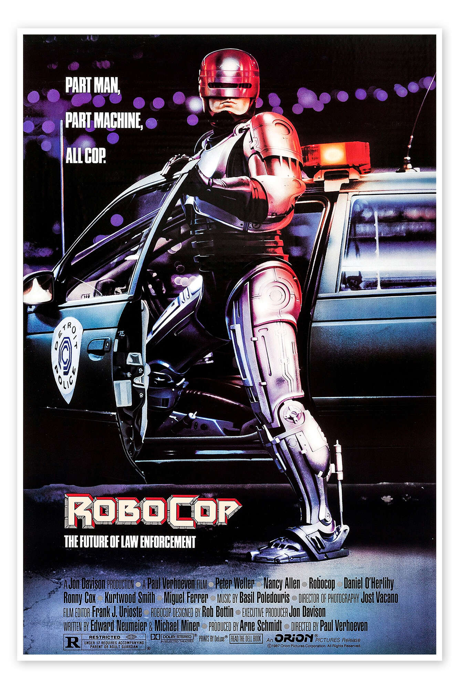
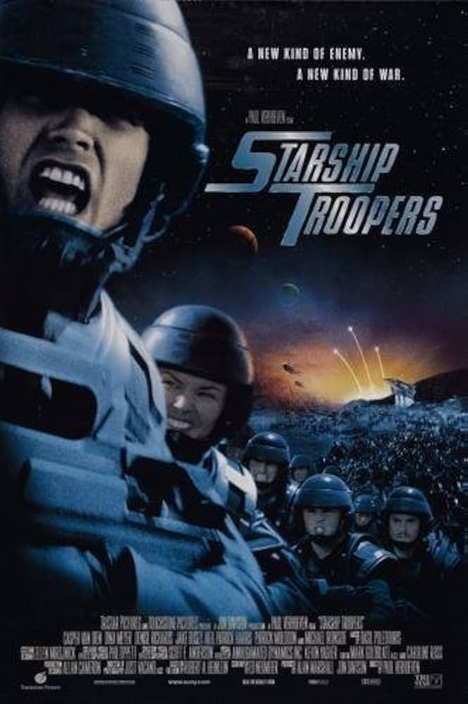
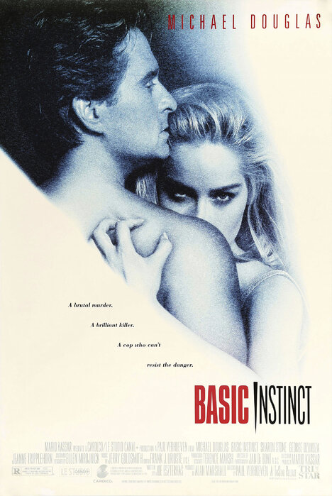
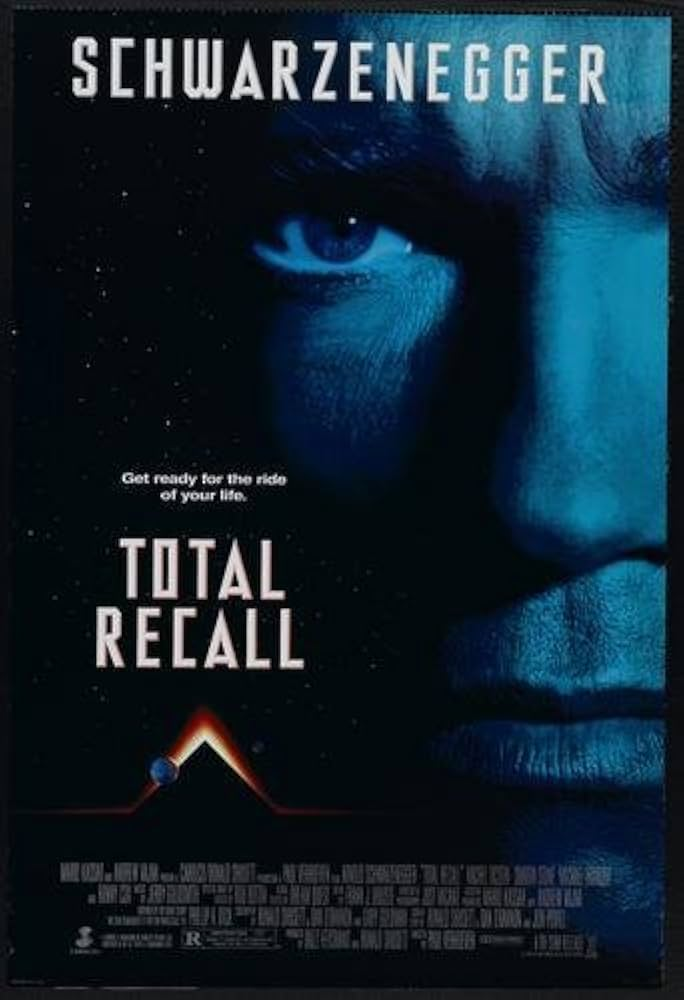

Año: 1987
Duración: 1h 42min
Puntuación: 7,6 / 10
Sinopsis: En un Detroit distópico y asolado por el crimen, un policía herido regresa a la fuerza como un poderoso cyborg perseguido por recuerdos sumergidos.
Estrellas: Peter Weller, Nancy Allen, Dan O'Herlihy
Anécdota: La mayoría de los disparos de RoboCop y el auto de la policía lo muestran saliendo o preparándose para entrar. Peter Weller no cabía en el coche de policía disfraz completo. Cuando necesitaba estar en el auto, llevaba la parte superior del disfraz y se sentaba en ropa interior. Para mantener la ilusión de que RoboCop usa todo el traje mientras está dentro de un automóvil, la mayoría de los disparos muestran sus pies robóticos saliendo primero.
Premios: Nominado a 2 premios Óscar, 11 premios ganados y 13 nominaciones en total.

Título original: Starship Troopers
Año: 1997
Duración: 2h 9min
Puntuación: 7,3 / 10
Sinopsis: La humanidad en un futuro militarizado y fascista entra en guerra contra una raza de insectos gigantes alienígenas en esta sátira de la política global moderna.
Estrellas: Casper Van Dien, Denise Richards, Dina Meyer
Anécdota: Michael Ironside era el mentor de Casper Van Dien en la película, como su mentor de personajes y también en la vida real, detrás de escena y en el set. "Y aún escucho su voz y todo, cuando estoy actuando, hasta el día de hoy. Lo mismo ocurre con Clancy Brown. Ambos, me influyeron más de lo que saben".
Premios: Nominado a 1 premio Óscar, 3 premios ganados y 16 nominaciones en total.

Título original: Basic Instinct
Año: 1992
Duración: 2h 7min
Puntuación: 7,1 / 10
Sinopsis: Un detective policial violento investiga un brutal asesinato que podría involucrar a una novelista manipuladora y seductora.
Estrellas: Michael Douglas, Sharon Stone, George Dzundza
Anécdota: No se utilizaron dobles corporales en ninguna de las escenas de sexo.
Premios: Nominado a 2 premios Óscar, 6 premios ganados y 23 nominaciones en total.

Título original: Total Recall
Año: 1990
Duración: 1h 53min
Puntuación: 7,5 / 10
Sinopsis: Cuando un hombre busca entre los recuerdos virtuales de las vacaciones del planeta Marte, una serie de eventos inesperados y desgarradores lo obligan a ir al planeta de verdad - ¿o no?
Estrellas: Arnold Schwarzenegger, Sharon Stone, Michael Ironside
Anécdota: Arnold Schwarzenegger notó que Michael Ironside estaba constantemente en el teléfono entre tomas. Cuando él tocó el tema con Ironside, le dijeron que estaba telefoneando a su hermana y que ella padecía cáncer. Schwarzenegger inmediatamente llevó a Ironside a su tráiler, y tuvieron una conversación de una hora y a tres bandas con la hermana de Ironside sobre qué ejercicios debería hacer y qué tipo de alimentos debería comer. Ni Ironside ni su hermana olvidaron nunca la amabilidad de Schwarzenegger.
Premios: Nominado a 2 premios Óscar, 7 premios ganados y 16 nominaciones en total.